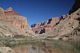

rafting

Definition: Rafting and whitewater rafting are recreational outdoor activities which use an inflatable raft to navigate a river or other body of water. This is often done on whitewater or different degrees of rough water. Dealing with risk is often a part of the experience.This activity as an adventure sport has become popular since the 1950s, if not earlier, evolving from individuals paddling 10 feet (3.0 m) to 14 feet (4.3 m) rafts with double-bladed paddles or oars to multi-person rafts propelled by single-bladed paddles and steered by a person at the stern, or by the use of oars.Rafting on certain sections of rivers is considered an extreme sport and can be fatal, while other sections are not so extreme or difficult. Rafting is also a competitive sport practiced around the world which culminates in a world rafting championship event between the participating nations. The International Rafting Federation, often referred to as the IRF, is the worldwide body which oversees all aspects of the sport.
Source: Wikipedia
Wikipedia Page (Something wrong with this association? Let us know.)
Wikidata Page (Something wrong with this association? Let us know.)